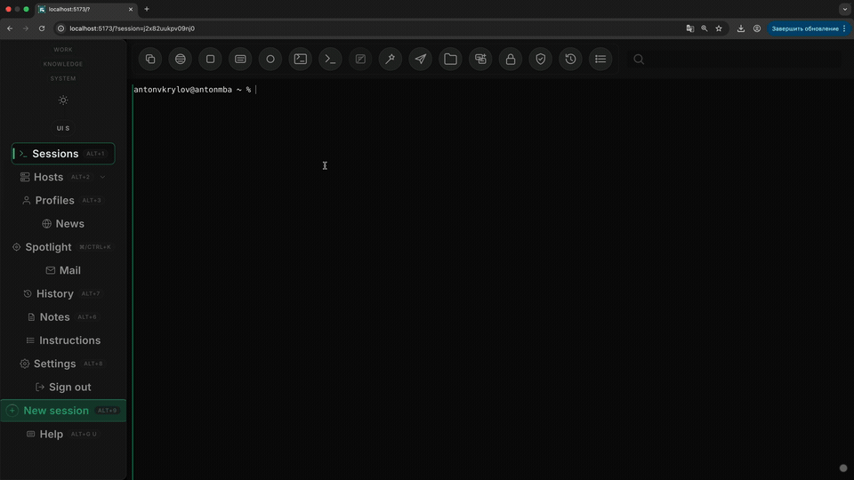
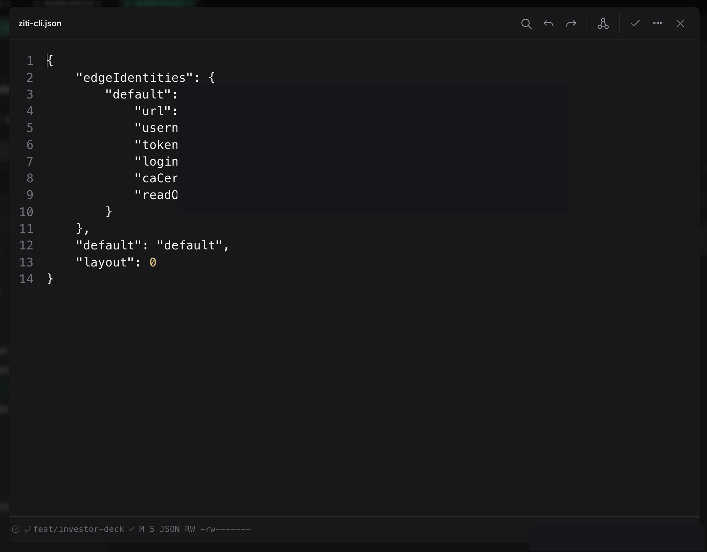

Why AI Coding Tools Still Feel Stuck on Localhost
I like the models. I do not like the box they come in. Modern AI work is mostly CLI-driven, remote, and collaborative, but most AI tools still assume one laptop, one repo, and one small chat window.
I have spent real time with Codex, Claude, and other chat-based AI tools. They are
useful. They can write code, explain errors, summarize diffs, and speed up local development.
The disappointment comes later, when you try to use them for serious engineering. Modern AI usage is not mostly about chatting in a browser. It is about terminals, logs, remote hosts, Kubernetes APIs, deployment state, and long-running sessions. Most tools still stop at localhost.

The model is not the problem. The surface is.
I am not disappointed by model quality. I am disappointed by product design. Most AI tools still feel like chat apps with a terminal attached, or terminals with a chat box glued on top. That is fine for a small script on your laptop. It is not enough for real operations.
| What serious AI work needs | What most chat-first tools offer |
|---|---|
| Multi-pane workflow with persistent context | One main chat view and maybe one terminal tab |
First-class remote execution over ssh |
Mostly local shell access or manual workarounds |
| Kubernetes-aware browsing, logs, and object state | Paste kubectl output back into chat |
| Real session history and replay | Prompt transcript without operator context |
| Team sharing, recording, and broadcast modes | Personal workspace only |
CLI is where the real work happens
For engineers, platform teams, and operators, the command line is still the center of gravity. That is where you run tests, tail logs, diff configs, inspect processes, restart services, and verify what changed. AI is now part of that flow, but the interface has not caught up.
This is a normal workflow. Yet most AI products still behave as if the real action is the prompt box. It is not. The prompt box is just one control in a much larger operating surface.

Localhost is only the first five minutes
Current tools are mostly good for localhost development. That is useful, but it is only the beginning. The moment you need to connect to a remote machine, inspect a container, follow a rollout, or debug a cluster issue, the experience falls apart.
I want browser-native remote connection over ssh. I want direct Kubernetes API access in the same
workspace, not a copy-paste loop. I want to see logs, pod status, events, files, and commands side by side.
I want a tmux-style split screen inside the browser because that is how this work is actually done.
A real file explorer changes the workflow
One feature that would immediately make a tool feel more serious is a real file explorer. Not a tiny repo
sidebar. A proper explorer that works across local files, remote hosts over ssh, and
Kubernetes-backed runtime paths in the same workspace.
This matters because engineers do not work only from prompts and terminals. They jump between source trees, config files, manifests, logs, generated outputs, and temporary artifacts. A strong file explorer makes the tool feel operational, not cosmetic. It also makes the product unique because most AI tools still treat files as passive context instead of an active surface for navigation, preview, and action.

A built-in editor should finish the loop
The file explorer is only half the story. If the tool can browse remote machines, it should also edit remote files directly in the same browser workspace. Opening a config, changing it, reviewing the diff, and asking AI to explain, refactor, or fix a block should not require jumping out to another app.
This is where advanced AI features actually matter. Inline edits, patch suggestions, config validation, command-aware fixes, and context from the current host or cluster turn the editor into an operating surface, not just a text box. That is much more useful than copying file contents into chat and hoping nothing gets lost on the way back.

A transcript is not history
Another missing piece is recording. A chat transcript is not enough. It tells you what the assistant said, not what the engineer ran, what changed on screen, or how the session evolved. Serious AI tooling should record command history, screen state, context switches, and replayable timelines.

Profiles should be products, not prompt hacks
People also work in different modes. Sometimes I want a strict reviewer. Sometimes I want a fast debugger. Sometimes I want an infra operator that assumes Kubernetes, logs, and rollout safety. Today this is usually handled with prompt tricks and manual setup. That is weak.
A serious tool should have a real profile wizard for different AI personas: coding assistant, incident responder, release engineer, cluster troubleshooter, documentation editor. Each profile should carry the right tools, permissions, defaults, layout, and guardrails.
Broadcast and multi-screen are not edge features
AI work is often collaborative even when one person is typing. I want broadcasting over multiple screens, a wall mode for incident response, and read-only follow mode for teammates. The assistant view, terminal view, and cluster view should be shareable independently.

What I actually want
The wishlist is not complicated. It is just closer to how engineers already work.
- Tmux-style split screens inside the browser.
- An integrated file explorer across local,
ssh, and cluster contexts. - A built-in remote editor with inline AI actions for real files, not pasted snippets.
- First-class remote connections over
ssh. - Direct Kubernetes API views for pods, logs, events, and rollout state.
- Persistent sessions that survive reloads and reconnect cleanly.
- Command history, screen recording, and replayable session timelines.
- A profile wizard for different AI personas and operator roles.
- Broadcast mode for second screens, war rooms, and review sessions.
- Better audit trails around who did what, where, and why.
Final take
I am not disappointed because Codex, Claude, or other AI systems are useless. They
are not. I am disappointed because the surrounding products are still too small for the job. They are good at
helping one person code on one machine. They are still weak at helping a team operate real systems.
The next step for AI is not only better benchmarks. It is better runtime surfaces: browser-based, split-pane, remote-capable, history-aware, and built for real CLI work. Until that happens, most of these tools will stay impressive and incomplete at the same time.
The gap is no longer model intelligence. The gap is whether the interface is built for actual engineering work instead of demo-friendly chat.
See the rest of the ktl site at https://kubekattle.github.io/ktl/.